Bangalore top 10 visting placess
1.cubbon park
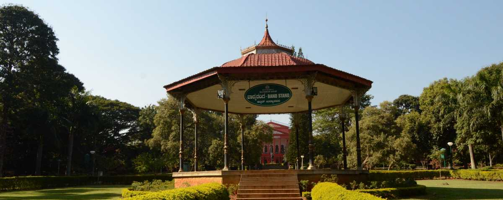Cubbon Park, officially Sri Chamarajendra Park, is a landmark park in Bengaluru, located in the heart of the city in the Central Administrative Area. Originally created in 1870 under Major General Richard Sankey, then British Chief Engineer of Mysore State, it covered an area of 100 acres (0.40 km2).

Cubbon Park, officially Sri Chamarajendra Park,[1] is a landmark park in Bengaluru, located in the heart of the city in the Central Administrative Area. Originally created in 1870 under Major General Richard Sankey, then British Chief Engineer of Mysore State, it covered an area of 100 acres (0.40 km2). Subsequent expansion has since taken place and the park's area is now reported to be 300 acres (1.2 km2).[2] It has a rich recorded history of abundant flora and fauna plantations coupled with numerous impressive and aesthetically located buildings and statues of famous personages, in its precincts.[3][4] This public park was first named as Meade's Park after Sir John Meade, the acting commissioner of Mysuru in 1870 and subsequently renamed as Cubbon Park after the longest-serving commissioner of the time, Sir Mark Cubbon. To commemorate the Silver Jubilee of Sri Krishnaraja Wodeyar's rule in Mysore State, in 1927, the park was again renamed as Sri. Chamarajendra Park, in memory of the 19th-century ruler of the state Sri Chamarajendra Wodeyar (1868–94), during whose rule the park came into existence.[5] The landscaping in the park creatively integrates natural rock outcrops with thickets of trees, massive bamboos, with grassy expanse and flowerbeds and the monuments within its limits, regulated by the Horticulture Department of the Government of Karnataka. The predominantly green area of the park has many motorable roads, and the well-laid-out walking paths running through the park are frequented by early morning walkers and the naturalists who study plants in the tranquil natural environment.[5] Tourists visiting this park in the city of Bengaluru have nicknamed the city itself as 'Garden City'.[6] The importance of the park to the city's environment is best stated by two urban architects who have won the national competition to design 'Freedom Park'. Access The park is accessible from M.G. Road, Kasturba Road, Hudson Circle and Ambedkar Veedhi (Road). The motorable roads which run through the park are allowed for light motor vehicles only. All locations of the park are accessible through walking paths. The park is open to the public at all times but the roads around the park are closed for traffic from 5:00 to 8:00 am every day to provide more safety and fresh environment for morning walkers and exercisers and also this park will be closed on every Sundays[7] Botanical assets Indigenous and exotic botanical species found in the park are about 68 genera and 96 species with a total of around 6000 plants/trees. Indigenous species found in the park are:[8] artocarpus, cassia fistula, ficus, polyalthias etc., and exotic species such as araucaria, bamboo, castanospermum australe, grevillea robusta, millettia, peltophorum, schinus molle, swietenia mahagoni, tabebuia. sp etc. Amongst the ornamental and flowering exotic trees lining the roads in the park are the Grevillea robusta (silver oak)—the first oaks introduced to Bangalore from Australia[5]—and the delonix or the gulmohar tree (bright red flowers with long petals) along the Cubbon road in the park, which is a widely cultivated tropical ornamental tree around the world.[9] Avenues The avenue of araucarias along with canna beds on either sides of the road from the Central Public Library to Hudson circle, avenue of Swieteninas in the Northern side of the park, the Java fig avenue along the road leading to the Government Museum, polyalthia avenue along the road from Queen Victoria's statue to King Edward VII's statue and the chestnut tree avenue from the Chamarajendra statue to Siddalingaiah circle are testimony to the botanical richness of the park. Other attractions at the park are the Ringwood circle, lotus pond and bamboo grove nook.[5] Historical buildings and monuments integral to the park The formal gardens, from the central hall of the original Attara Kacheri (means 18 government offices) now the Karnataka High Court, extends along the ceal promenade developed symmetrically with avenues, to the museum building. Another impressive artistic structure is Iyer Hall, which houses the Central Library with a rose garden as a frontage. It is undisputedly the largest public library in the state as evidenced by the college students thronging to read here, and has the world's most extensive collection of Braille books. Other buildings located within or at the periphery of the park are 1) the Indira Priyadarshini Children's Library, 2) the Venkatappa Art Gallery, 3) the Aquarium (stated to be the second largest in India), 4) the YMCA, 5) Yuvanika — the State Youth Centre, 6) Century Club, 7) Press Club, 8) Jawahar Bal Bhavan, 9) Tennis Pavilion, 10) the Cheshire Dyer Memorial Hall and 11) the Ottawa Chatter.[5]
2.Bannerghatta national park

Bannerghatta National Park, Bangalore Overview Located 22 km away from Bangalore, the Bannerghatta National Park is a sanctuary for a large variety of flora and fauna. Spread over a massive area of around 104.27 sq. km, this national park was established in the year 1971. The park itself has a number of establishments within its confines, which includes the country's first butterfly park as well. Other attractions here are ten Reserve Forests of Anekal Range of the Bangalore Forest Division, an aquarium, a zoo, Children's park, Crocodile Farm, Snake Park and Prehistoric Animals' Park. What's more, you can get up close and personal with the wondrous wildlife here by the means of a jungle safari, which is a popular activity to pursue here. The best part about Bannerghatta National Park is the small well-defined zones for animals that almost guarantees that you will spot the animals. People go in caged vehicles (buses/safari).

3.vidhana sudha
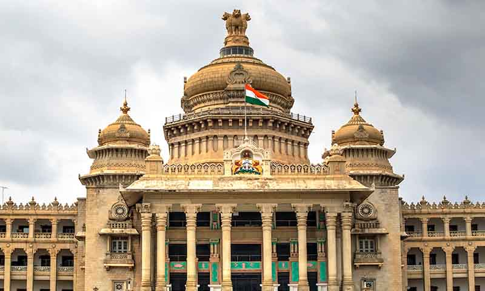The two houses of legislature of the princely state of Mysore, the legislative assembly and the legislative council, were established in 1881 and 1907 respectively. Sessions of the two houses took place in Mysore with joint sessions taking place in the Bangalore Town Hall. After India's independence on 15 August 1947, Mysore acceded to India and capital of Mysore state was shifted to Bangalore with the two houses moving into Attara Kacheri, a British-built building in Cubbon Park that housed the High Court of Mysore.[2] With the need for a more spacious quarters, a new building with two floors to accommodate both the houses was planned and the foundation stone of the building was laid by Jawaharlal Nehru, the first Prime Minister of India on 13 July 1951.[3] Kengal Hanumanthaiah, who was elected as chief minister of Mysore after the 1952 election revised the plan.[4] The new plan included accommodating other government offices, archives, a library and a banquet hall in the same building with artistic elements added representing the tradition of Mysore state.[3]

Situated in the heart of Bangalore near Cubbon Park, Vidhana Soudha is the seat of the Karnataka State Legislature and the administrative center of the state government of Karnataka. Right opposite to the High Court of Karnataka, Vidhana Soudha is an iconic government building located in Bangalore.
4.Lalbagh Botanicla garden
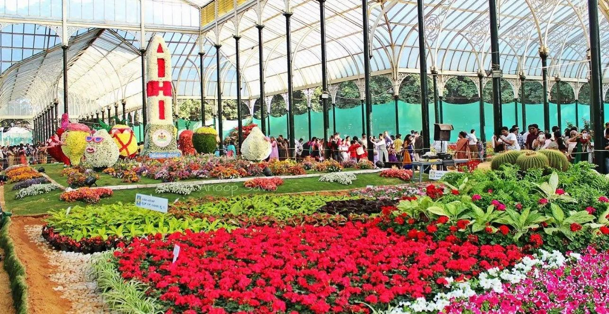Lalbagh is one of Bengaluru’s major attractions. A sprawling garden situated in a 240 acres piece of land in the heart of the city, Lalbagh houses India’s largest collection of tropical plants and sub-tropical plants, including trees that are several centuries old. Exhibits like the Snow White and the seven dwarfs, and a topiary park, an expansive lake, a beautiful glasshouse modelled around the Crystal Palace in London adorn the park giving it a surrealistic atmosphere. A watchtower perched on top of a 3000 million years old rocky outcrop (which is a National Geological Monument), built by Kempegowda, the founder of Bengaluru also adorns the picturesque garden.
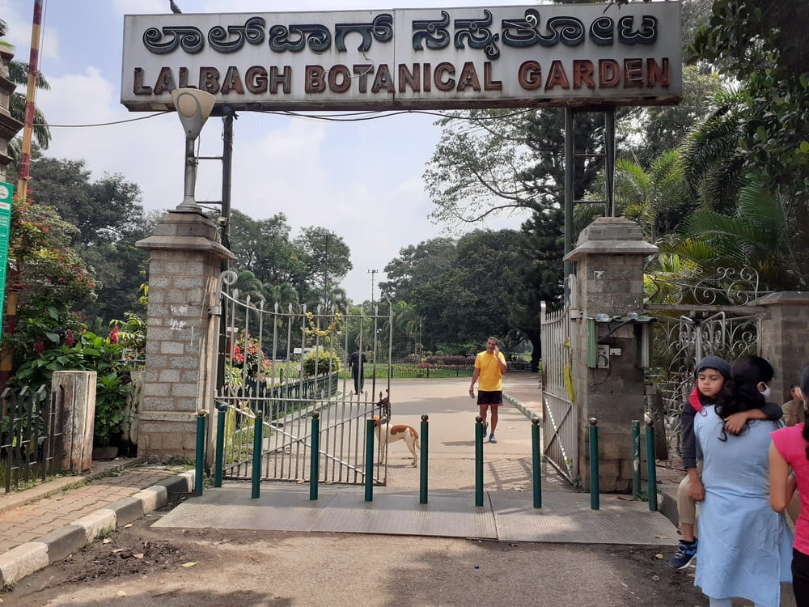Why visit Lalbagh:
Lalbagh Glass House: Lalbagh Glass House is a giant palace like glass and iron structure, inspired by Crystal Palace in Londons Hyde Park. Lalbagh glass house was built in 1989 and renovated in 2004 and remains the primary attraction for visitors of Lalbagh. Lalbagh Lake: Lalbagh has a large lake in its southern part, complete with walking trails, a bridge and a mini waterfall. Seasonal attractions at Lalbagh: Lalbagh hosts several events throughout the year- Lalbagh flower show during Republic Day (26 January) and Independence Day (15 August), Mango/Jackfruit festivals during summer, cultural shows at Band stand are some of the popular events held in Lalbagh.
5.tipu sultan Plaace and Fort

ipu Sultan's Summer Palace, in Bangalore, India, is an example of Indo-Islamic architecture and was the summer residence of the Mysorean ruler Tipu Sultan. Hyder Ali commenced its construction within the walls of the Bangalore Fort, and it was completed during the reign of Tipu Sultan in 1791. After Tipu Sultan's death in the Fourth Anglo-Mysore War, the British Administration used the palace for its secretariat before moving to Attara Kacheri in 1868. Today the Archaeological Survey of India maintains the palace, which is located at the center of Old Bangalore near the Kalasipalya bus stand, as a tourist spot. Entry fee is ₹20 for Indian citizens, while for foreign visitors is ₹200 (US$2.50). The structure was built entirely of teak and stands adorned with pillars, arches and balconies. It is believed that Tipu Sultan used to conduct his durbar (court) from the eastern and western balconies of the upper floor. There are four smaller rooms in the corners of first floor which were Zenana Quarters. There are beautiful floral motifs embellishing the walls of the palace. The site also holds a painting of grand throne visualized by Tipu Sultan himself. Coated with gold sheets and adorned with precious emerald stones, Tipu had vowed never to use it until he completely defeated the British Army. After Tipu Sultan's death, the British dismantled the throne and auctioned its parts as it was too expensive for a single person to buy whole.[citation needed] The rooms in the ground floor have been converted into a small museum showcasing various achievements of Tipu Sultan and his administration. There are newly done portraits of the people and places of that time. There is a replica of Tipu's Tiger, which is in the Victoria and Albert Museum in London. Tipu Sultan's clothes and his crown are present in silver and gold pedestals. The silver vessels given by a general to Hyder Ali is also displayed. The Horticulture Department, Government of Karnataka, maintains the area in front of the palace as a garden and lawn
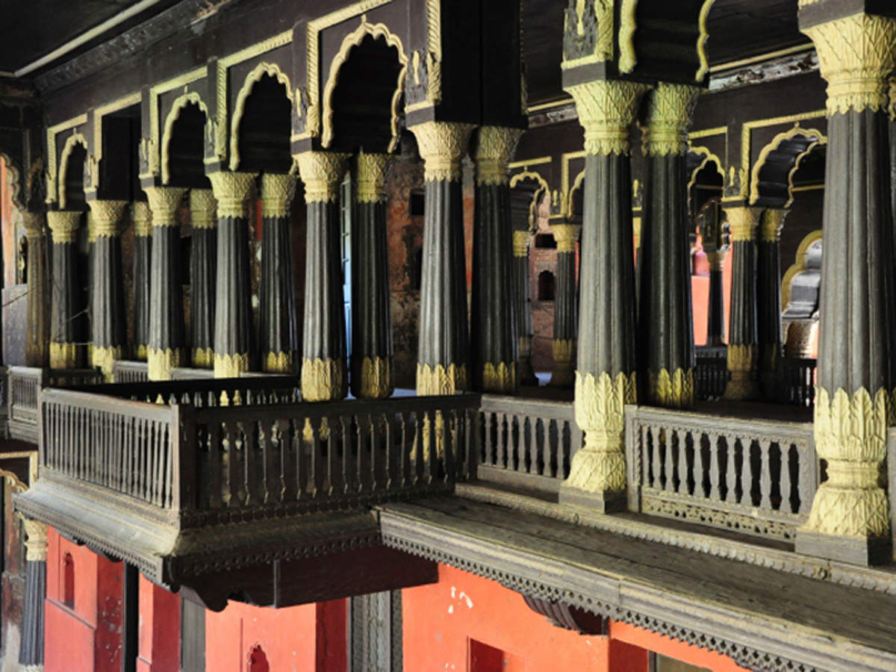Wealth of the Sea’ and other palaces of Tipu Sultan
Posted on October 16, 2011 by Olikara The splendour of Tipu’s court was reflected in it’s magnificient houses of state, the royal residences of Tipu Sultan. We may classify among his residences 4 major palaces and 3 minor ones. The palace at Bangalore which still exists today was commenced in 1778 by Haidar Ali and completed by Tipu in 1791. The artist Robert Home writes that ‘the palace was grand and spacious, displaying to the four winds of heaven as many ample fronts, each composing a lofty hall, the wooden roof of which is supported by colonnades of the same material. The pillars are connected by scolloped arches; and the whole is superbly painted and gilt. The walls in front of the entrances to the East and West halls have balconies, richly carved, and raised by small pillars united by arches.‘ To Robert Mackenzie, the palace was ‘the most airy and elegant of any in the East‘, discounting those of Delhi and Agra. He greatly admired the paintwork and decoration of flowers in gold leaf, in the diwan-i-aam, as well as rich floor carvings and wall hangings, and he found extensive ivory inlay.
6.Bangalore palace
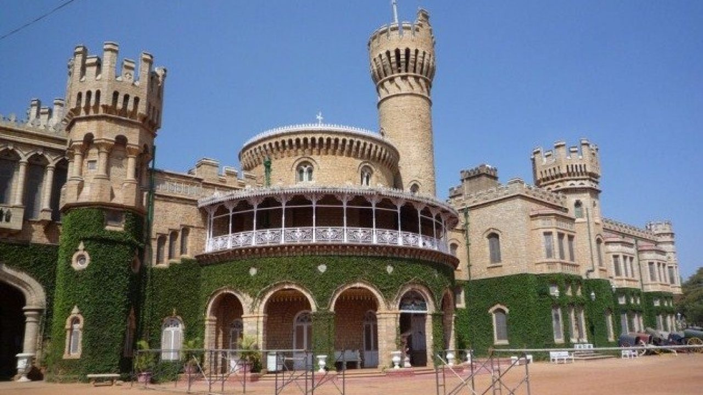Bangalore Palace is a 19th century royal palace located in Bangalore, Karnataka, India, in an area that was owned by the Rev. John Garrett, the first principal of the Central High School in Bangalore, now famous as Central College. The commencement of the construction of the palace is attributed to him.The palace belongs to Maharaja Biswajit and his wife Maharani PiyalMany international artists have performed in the grounds. Today a legal battle between government and the Mysore royal family has seen a ban of commercial activities. Nevertheless, a number of private companies controlled by the royal family runs a number of wedding halls on the grounds. For the past 34 years the oldest security agency of Karnataka named Scorpion Security Ltd has their national headquarters inside the palace premises. Over the past few years, the palace grounds have been hosts to major music artists like: Iron Maiden, Aerosmith, Backstreet Boys, Bryan Adams, Delirious?, Don Moen, Hillsong United, David Guetta, Elton John, Deep Purple, Petra, Textures, Amon Amarth, Lamb of God, Mark Knopfler, Akon, The Black Eyed Peas, The Rolling Stones, Sepultura, Mr Big, Metallica, Megadeth, Michael Learns to Rock, Roger Waters, Guns N' Roses, The Prodigy, Dream Theater, No Doubt, Sepultura, Scorpions, Enrique Iglesias, Machine Head, Cradle of Filth, Jay Sean, Ludacris and Flo Rida. Iron Maiden's performance in 2007 was a historic gig named Eddfest in the sub-continent. The concert was part of the band's A Matter of Life and Death Tour. The name Eddfest is taken from the band's mascot Eddie. The concert is the largest paid concert ever to take place in India with an estimated 38,000 people in attendance with 4000 people watching from outside the venue without tickets. It marked the first visit of Iron Maiden to the Indian subcontinent, and the first major heavy metal concert to take place in the country. Jay Sean, Ludacris and Flo Rida performed in Palace Grounds on 22 September 2011 for the opening ceremony of the Champions League T20. Metallica performed at the palace grounds on 30 October 2011 as part of the Rock N India festival, their first show in India which was attended by 31,000 people.[2] It would also turn out to be the last concert to take place as the state government and police stopped giving permission for any future musical events or concerts at the venue (all concerts banned).
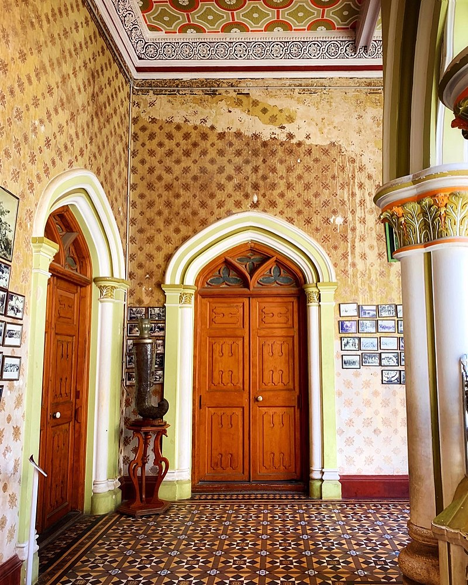un World is an amusement park situated in the palace grounds. This amusement park is allowed under permission from Smt Pramoda Devi Wadiyar, owner and legal heir to Late Sri Srikantadatta Narasimharaja Wadiyar. It has various joy rides, water park and snow room.
7.HAL Hetitage center and Aerospace Museum

HAL Heritage Centre and Aerospace Museum
HAL Heritage Centre and Aerospace Museum was established by Hindustan Aeronautics Limited. The museum displays a varied collection of aircraft models, fighter planes and helicopters. The museum also houses a reference library, aircraft simulators, a mock air traffic control tower and an aeromodelling club.
What to see at HAL Aerospace Museum:
Hall 1: Photographs showcasing growth of aviation from 1940 onwards Hall 2: Showcases various functions of an aircraft engine. Cross section of various aircraft engines can be seen here Outdoor displays: MIG-21, Kiran, AJeet, Lakshya and other important aircrafts are on display Library with rare collection of interesting and useful books related to aviation Simulator: Sit in the pilot’s seat and feel what it is to be flying like a bird. Gardens: A rose garden, children’s play area, herbal garden are available inside museum campus.
Heritage Centre and Aerospace Museum "As per Govt guidelines, HAL Heritage Centre and Aerospace Museum are opened since 22/07/2021." Welcome to the HAL Heritage Centre & Aerospace Museum, Bangalore, a virtual wonderland for Aviation enthusiasts and history buff, an unforgettable experience that is entertaining & enlighting at the same time. 2. Hindustan Aeronautics Limited (HAL) Heritage Centre & Aerospace Museum, Bangalore, the first of its kind in India established in 2001, is situated at the intersection of HAL Old Airport Road & Basavanagar Road. It is about 17 Kms from the Bengaluru City Railway Station. The Heritage Centre & Aerospace Museum is sprawled over 4 acres of lush green land. 3. There are two major halls, one displaying the photographs that chart the growth of aviation in each decade from 1940 till date and a Hall of Fame that takes the visitors on an exciting journey through the Heritage of Aerospace & Aviation Industry in India. Aircraft4. The second Hall highlights the various functions of an Aero Engine by displaying motorized cross sections of various models of Aero Engines. Real Engines such as Garret (for Dornier Aircraft), Adour (for Jaguar Aircraft) and Orpheus (for Kiran Aircraft) can be seen here along with Ejection Seat with Parachute; and Pushpak & Basant Aircraft. 5. Outdoor display of Aircraft such as MARUT, MIG-21, HT-2, KIRAN, CANBERRA, AJEET, LAKSHYA (Pilotless Target Aircraft) & many more, will excite aerospace lovers of all ages - kids, students and adults. LCA6. A Unique exhibit is the ATC Radar parched with L Band surveillance Radar having a range of 200 nautical miles which rotates at speed of 3-4 RPM, with the frequency of 1250-1350 MHZ and Meteorological Radar. In addition, PSLV model & PSLV Heat shield are displayed to give a glimpse of forays made by the country in space technology. 7. For the academically inclined, a Library on Aerospace provides opportunity to trace the exciting development of the industry since the 1940s. While the Museums’ prized possessions include various types of Aircraft models on static display, the availability of Audio-Video facility and display of translides enhances the experience immeasurably. Taking ones experience a notch above are the true-motion simulators that puts oneself in the pilot’s seat, offering a thrilling ride. It is where visitors of all ages can explore and imagine what it would be like to soar through the skies and have realistic feel of flying fighter jets & commerical aircraft. Helicopter8. The Museum has an excellently landscaped exterior with an exclusive Rose Garden, Orchidarium and Herbal Garden with a number of exotic varieties. A children’s play area provides kids endless hours of fun. A sustainability park displays working models of solar power systems, biogas plant and hybrid windmills to educate visitors and students on alternate energy sources which help conserve natural resources and preserve the environment. 9. For small kids’ and childrens’ amusement, there is a fish pond with colourful fishes. After an hour or two of enjoyable experience, visitors can purchase aircraft models and other items from the Souvenir Shop and relax in the Cafeteria. An open space natural Dining Hall under the trees is a main attraction for groups. 10. The Museum is open to public from 9 AM to 5 PM on all days throughout the year.
8. ISRO (UR Rao Stellite Center)
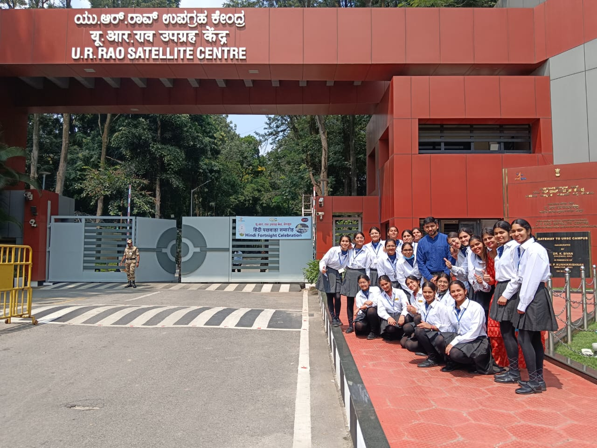U R Rao Satellite Centre (URSC), Bengaluru, formerly known as ISRO Satellite Centre (ISAC) is the lead centre for building satellites and developing associated satellite technologies. These spacecraft are used for providing applications to various users in the area of Communication, Navigation, Meteorology, Remote Sensing, Space Science and interplanetary explorations. The Centre is also pursuing advanced technologies for future missions. URSC is housed with the state-of-the-art facilities for building satellites on end-to-end basis. ISRO Satellite Integration and Test Establishment (ISITE) is equipped with state-of-the-art clean room facilities for spacecraft integration and test facilities including a 6.5 Metre thermo vacuum chamber, 29 Ton vibration facility, Compact Antenna Test Facility and acoustic test facility under one roof. Assembly, Integration and Testing of all Communication and Navigation Spacecraft is carried out at ISITE. A dedicated facility for the productionisation of standardised subsystems is established at ISITE. URSC has a unit called Laboratory for Electro Optics System (LEOS), which is situated in Peenya, Bengaluru and is mainly responsible for research, development and productionisation of Sensors for ISRO programmes. Since inception, URSC has the distinction of building more than 100 satellites for various applications like scientific, communication, Navigation and remote sensing. Many private and public sector industries are also supporting ISAC in realising standard satellite hardware.
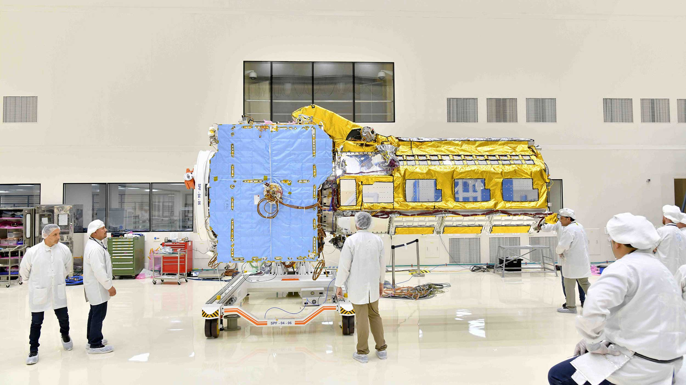9.Temples
Bangalore, officially known as Bengaluru is the capital of the Indian state of Karnataka. This place is the third most populous city and fifth-most populous urban agglomeration in India. The diversity of religions is reflective of the rich cultural heritage of this place. Although it is known to be a commercial hub, one can find various temples, Mosques, Churches, Jain derasars, Sikh gurudwaras, Buddhist viharas and the list goes further on. The ancient temples in Bangalore are built in the traditional Dravidian architectural style whereas few exhibits a modern facade. Must visit Bangalore if you visit Karnataka. It will provide to you the best religious trip you might have ever planned.
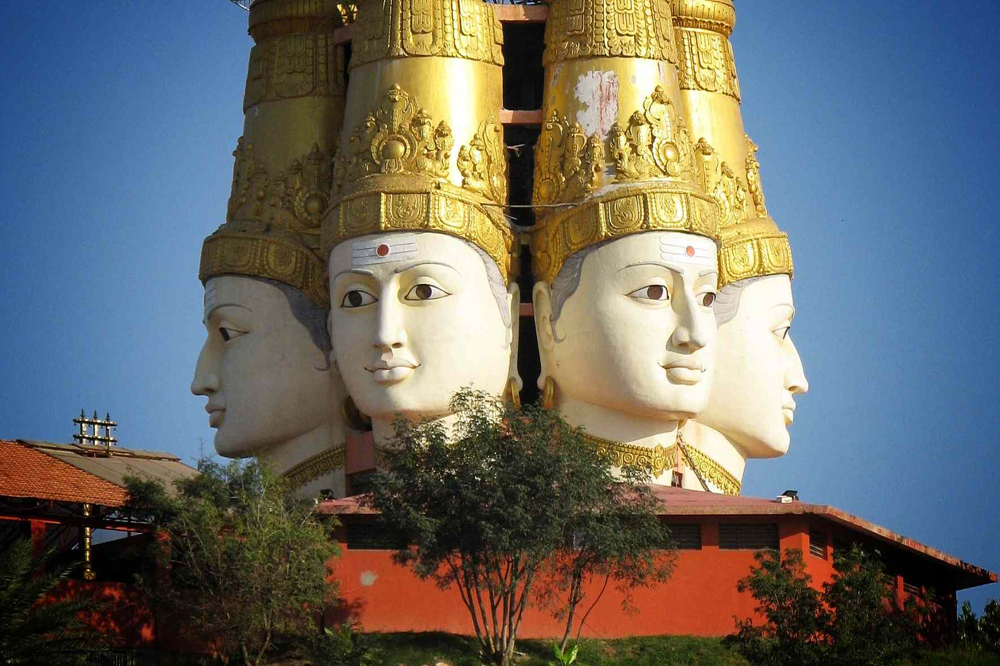- The Chokkanathaswamy Temple
- The Nandhi Temple
- ISKCON Temple
- Shivoham Shiva Temple
- Banashankari Amma Temple
The nationl Gallery of modern Art
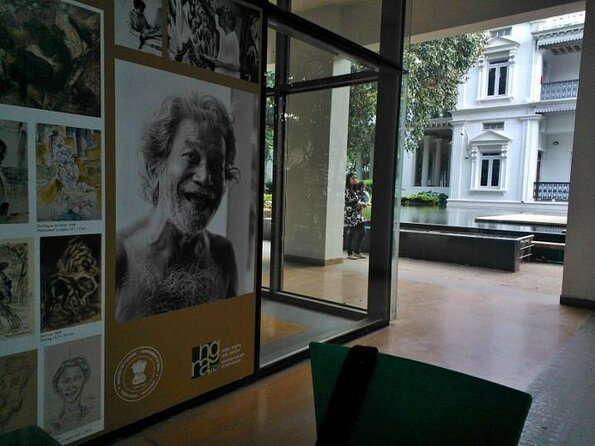National Gallery of Modern Art is an art gallery in Bangalore. It was inaugurated in the year 2009. It showcases modern Indian art and houses paintings by Raja Ravi Verma, Jamini Roy, Amrita Sher-Gil, Rabindranath Tagore and a large number of modern and contemporary artists.[1] Equipped with an auditorium, a public art reference library, a cafeteria, and a museum shop cum facilitation block, the NGMA Bengaluru looks ahead to becoming a hub of art activities and a major cultural centre at Bengaluru. The gallery organizes and hosts talks on art and culture by speakers, seminars, film screenings as well as workshops and guided walks throughout the year.[2]The gallery was being refurbished in 2006 to open as the third site of NGMA. This follows a prolonged period of development and controversy.[3] The sprawling, 100 year old Manikyavelu Mansion once belonged to Vilum Manickavelu Mudaliar the, a Yuvaraja of Mysore. Mudalier was not born into aristocracy, but rather married into it. He became a successful business owner after leasing several manganese and chrome mines on lease. According to the documents in the NGMA archives, the building was bought by Mudalier early on in his career. The archivists at the NGMA are certain that Mudalier and his family lived in the mansion for quite some years. However, due to financial problems, the house was put on auction and was acquired by the City Improvement Trust, currently the BDA, and then transferred to the Housing Board in the 1960s. In 2000, the Ministry of Kannada and culture sub-leased the mansion to the Ministry of Culture. It became the chosen location for the southern centre the NGMA.[4] Restoration began in 2003, and opened on 18 February 2009 under the curatorial ship of Sobha Nambisan.[5]
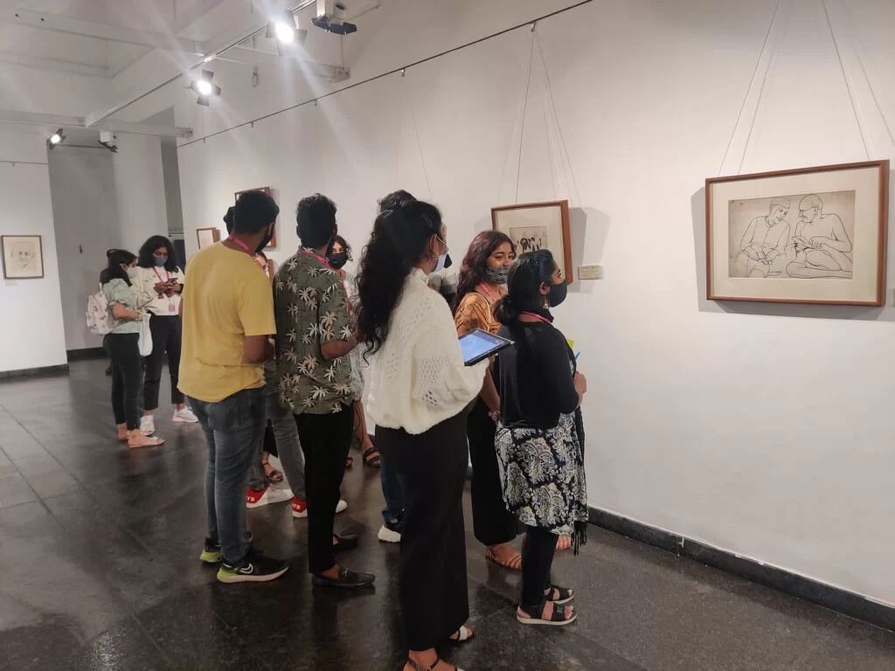NGMA Bangalore currently houses approximately 500 exhibits that are spread across a corridor, tiny rooms and large spacious halls that span two floors. You could cover this in between 1 and 2 hours. The exhibits have been displayed - classified into broad categories - according to different time periods, art schools and by artists. One can see paintings by Raja Ravi Verma, Jamini Roy, Amrita Sher-Gil, the Tagore brothers and Rabindranath Tagore and a large number of Modern and Contemporary artists. The NGMA has modern, post-modern and traditional Indian art work. It hosts art work from the 18th Century to present day. Sculptures by the likes of S. Dhanpal and Kanayi Kunhiraman as well as artworks by Arpita Singh and Anjolie Ela Menon are a part of the extensive collection.[6] The display includes Indian miniatures, colonial artists, Bengal School and post-independence artists which led to the birth of modern and post-modern art of today. In addition to permanent display of the paintings and sculptures, this NGMA also showcases national and international exhibitions regularly.[2]